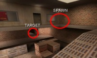
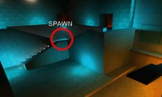
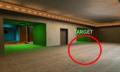
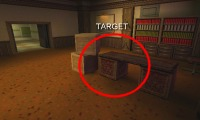
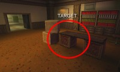

|
 
The first spawn and target is inside the factory building. Players will spawn on the ledge outside the offices and the target is right underneath on the walkway above the crates. Defending the factory can be done in numerous ways, but most often happens from outside. Snipers on the roofs and streetlights, and guards at the different entrances to the factory area.  The second spawn and target is in the bank area. Players spawn in the stairs intersection and the target is centered inside the bank. Defend by getting an overview of the area from the high ledge above bank and guards by the two entrances. A popular tactic is to have one kamikaze guard waiting behind the door inside the bank. When starting in any of the spawn spots with the boss on your team, the goal is to escort him safely to the opposite target. |
 
